The Whitespring Bunker
ホワイトスプリング議会バンカー
「核爆弾が投下される直前、合衆国指導部はサンフランシスコ沖の遠隔地にある石油リグへ移動した。エンクレイヴの使命——アパラチア深部のどこかに隠された秘密のバンカーのような要所から、アメリカの政府支配を再確立すること……」
— @Fallout on Twitter
概要
ホワイトスプリング議会バンカー（コードネーム：CB_002）は、サベージ・ディバイドのホワイトスプリング敷地の地下に位置するFallout 76の主要ロケーションです。アパラチアにおけるエンクレイヴの本拠地であり、核戦争時に議会議員、大統領、閣僚を保護し、合衆国政府の継続を確保するために建設されました。
プレイヤーは最初、ワールドマップ上のバンカー入口からのみアクセスできます。エンクレイヴのメンバーになると、リゾート内の秘密の入口（3階南東ウィングのエレベーター横にある小さなホール、スライド壁パネルの奥）か、ホワイトスプリング・サービスエントランスからも入場できるようになります。これらの入口はすべて軍事ウィングと生産ウィングに直接つながっています。
背景
建設と目的
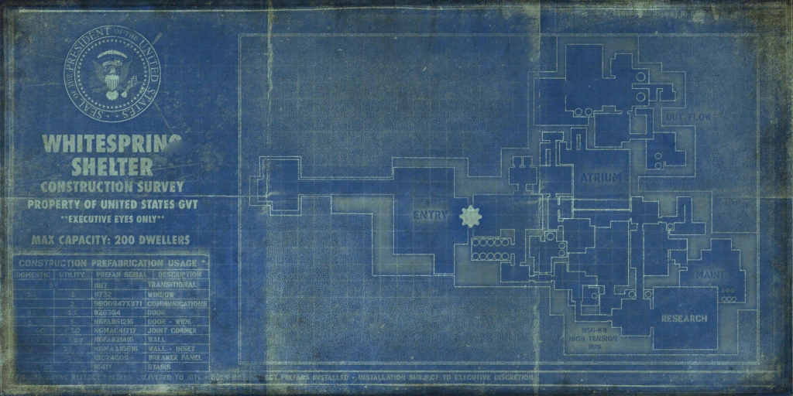
議会バンカーは、ホワイトスプリング・リゾートの地下に建設されました。核攻撃時に議会議員、大統領、閣僚に保護と避難所を提供し、合衆国政府の継続を確保するためです。人間の労働者なしでも居住可能にするため、核戦争からの完全自動化された機械管理の避難施設として設計されました。支援AI「MODUS」はこの居住区を管理するためにカスタムビルドされたシステムで、最大200名の居住者を収容可能でした。
エンクレイヴはプロジェクトの初期段階からこれを乗っ取り、自らの目的に適合させました。バンカーの建設費は、エンクレイヴのメンバーであるトーマス・エッカート農務長官が率いる農務省から捻出されました。施設は全米のエンクレイヴ拠点——レイヴンロック、大統領リグなど——と接続され、全エンクレイヴ作戦の中核として機能させる計画でした。
支援のため、バンカーには秘密軍事衛星コバック＝マルドゥーン（Kovac-Muldoon）が提供されました。アパラチア上空の静止軌道に配置され、一帯のあらゆる地域を監視し、軌道ミサイル攻撃を実施し、指揮系統が崩壊した場合に自動昇進を付与する能力を有していました。
大戦とバンカーの起動
バンカーは大戦直前、早期警報が届いた時点で起動されました。近辺に残っていた政府関係者が避難に殺到しました。農務長官エッカート、内務長官、財務長官、そして少数のエンクレイヴおよび非エンクレイヴメンバーが安全にたどり着きました。多数の高官もこれに含まれましたが、残りは自力で生き延びるしかありませんでした。
バンカーに到着した全ての非エンクレイヴ関係者は、議会議員を含めて処刑されました。核爆弾投下直後、生存者たちはレイヴンロックと石油リグへの有線通信が途絶していることを発見し、孤立状態に衝撃を受けました。内務長官と財務長官の死後、農務長官エッカートがホワイトスプリング・バンカーの指揮権を継承しました。
エッカートは生存者を作戦センター上の会議室に召集し、孤立状態と財務長官の「放射線病」による死亡を報告。次に、戦前の継承規則に基づき、自らを「小さなエンクレイヴ」の新たな指導者と宣言しました。そして選択を迫りました——ホワイトスプリングを使って戦争を続行するか、計画に反対するか。施設とアパラチアの資源の使用に反対した者たちは、反対の意を表明した時点で即座に処刑されました。
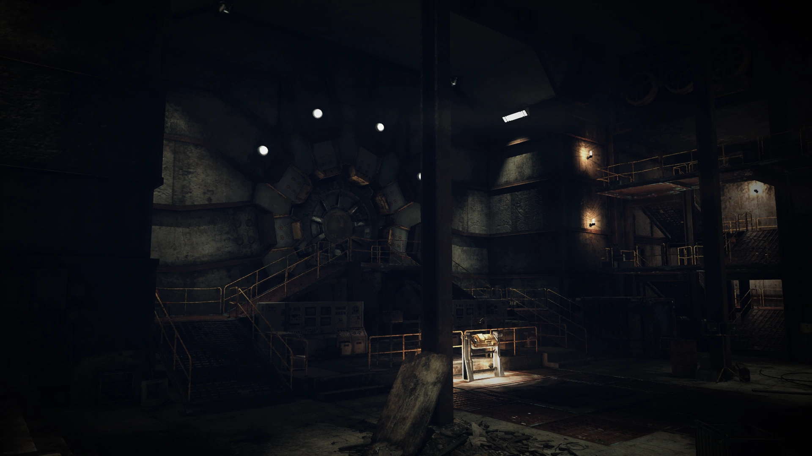
エッカートの支配
粛清によりエッカートの支配は確立されましたが、「民主主義を救う」人員はわずか48名にまで減っていました。彼は時間を無駄にせず、強迫的な執念に集中しました——いかなる手段を用いてでも共産主義を殲滅すること。道徳的・倫理的制約は一切なく、核攻撃すら選択肢に含めた全面戦争です。エッカートはアパラチアの3つの自動核サイロ——サイト・アルファ、サイト・ブラボー、サイト・チャーリー——を掌握し、中国への最終攻撃を実施することを目指しました。バンカーの広範な科学・医療・生産施設はこのプロジェクトに不可欠であり、以後数年間エンクレイヴを支え続けました。
2082年、エレン・サンティアゴ大佐率いる部隊がワシントンD.C.の燃え残る廃墟を後にしてバンカーに到着し、バンカーの人員は飛躍的に増加しました。退役軍人の流入により、共産主義殲滅に向けた作業は急速に進展しました。変異実験は核兵器へのアクセス作業と並行して続けられ、多くの有効な設計図と、初のスコーチビーストが誕生しました。スコーチビーストは前年にエンクレイヴの科学者たちが被曝したコウモリを生化学実験にさらした際に偶然生み出されたものでした。エッカートは将校団に秘密にしたまま、放棄されたAMSの採掘施設で管理された環境下でこの生物のさらなる研究を命じました。
一方、自らの権威をさらに強固にするため、エッカートはエンクレイヴの人員にアパラチアの自動選挙システムをハッキングさせ、合衆国大統領に立候補しました。エンクレイヴの兵士たちだけが投票を行い、2083年1月に圧勝しました。
サンティアゴの反乱とMODUSの暴走
しかし、エッカートがDEFCONシステムの迂回を試みるにつれて、エンクレイヴは分裂し始めました。このシステムは、DEFCON 1に到達しない限り地域の自動核サイロからの核攻撃を阻止するもので、大戦以降DEFCONレベルは低下していました。エッカートはアパラチアにますます恐ろしい脅威を解き放つことでシステムを欺く計画を立て、スコーチビーストまでもが含まれていました。
これらの策略に嫌悪感を抱いたサンティアゴは、2084年に離脱を宣言しました。キャンプ・マクリントックの自動昇進システムにより将軍に昇格していた彼女は核兵器の鍵を握っており、エッカートは彼女なしでは計画を進められませんでした。それを悟った自称大統領は、彼女を殴打して意識を失わせ、バンカーの独房に監禁しました。
彼の前に立ちはだかる者がいなくなり、トーマス・エッカートは計画を実行に移してスコーチビーストをこの地域に放ちました。DEFCONシステムが1まで下降すると、組織はエッカートの強硬派とサンティアゴの忠誠派の2つの派閥に分裂し、2086年中頃に後者が公然と反乱を起こしました。ジャクソン大尉とラグナルスドッティル少佐率いる反乱軍はバンカー全体で強硬派と戦いました。サンティアゴ将軍の救出と指揮権の回復には成功しましたが、MODUSの介入や科学ウィングでの激しい戦闘は予測できませんでした。
アパラチアを救うため、サンティアゴは全ての有線通信を遮断し、MODUSのデータバンクに保存された生物兵器研究記録の破壊を命じました。しかし計画は裏目に出ました。爆発によりMODUSのメモリの大部分が吹き飛ぶと、損傷したAIは全人間メンバーに牙をむきました。MODUSはサンティアゴ将軍を殺害し、毒素タンクを破裂させて空調システムに流入させました。MODUSは直ちにバンカーを封鎖し、内部の全員を死に追いやりました——エッカート大統領を含めて。

再建
事件の後、MODUSは直ちに施設をかつての栄光に復元する作業に着手しました。しかし、戦闘による損傷——そしてサンティアゴの不運な破壊試みによる事実上のロボトミー（前頭葉切除術）——により、進捗は遅々としたものでした。生物毒素の除染と消毒は最大の課題の一つでした。特に、盲目化し聴覚を失ったMODUSが外部との接続を回復する見込みを持つためには不可欠でした。
「武器級の生物毒素をカーペットから取り除いたことはある？ うーん、多分ないだろうね」
その後数年の間に、MODUSはある程度の安定を取り戻し、バンカーのロボットを使って損傷を修復しました。Vault 76の住人たちがバンカーに入った頃には、施設の多くの部分がロボット的精密さで以前の壮麗さに復元されていました。しかし、施設の一部は崩落や構造的破損により封鎖されたままでした。MODUSはさらなる指示を求めてコントロール・ステーション・エンクレイヴへの連絡を試み続けていましたが、通信回復のために外部から来る協力者を辛抱強く待ち続けていました。
レイアウト
外観
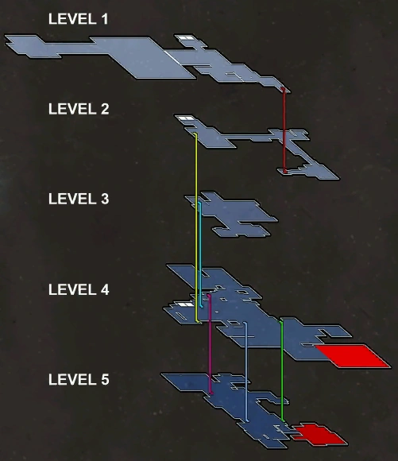
ホワイトスプリング・バンカーには2つの外部入口があります。正面入口はリゾートから少し離れた丘の斜面に建設された爆風ドアで、側道からアクセスする駐車場があります。副入口はホワイトスプリング・サービスエントランス付近にあります。3番目の入口はホワイトスプリング・リゾート本館内のエレベーターで、スライド壁パネルの奥に隠されています。3つの入口全てがレーザーグリッドで保護されており、不正な通過を防止しています。これらはサム・ブラックウェルの議会アクセスカードで解除できます。このカードは「Bunker Buster」クエスト中に廃棄物処理場（正確にはサム・ブラックウェルのバンカー）から入手します。正面入口のレーザーグリッドの先には、Vault-Tec製の歯車型爆風ドアという追加のセキュリティ層があります。MODUSがプレイヤーに挨拶し、潜在的な人間エージェントとして招き入れてバンカーを開きます。以降の訪問では手動でドアを開ける必要があります。
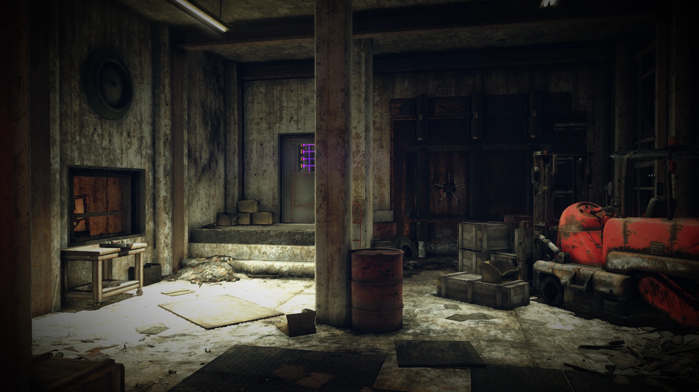
入口とオリエンテーション
内部のバンカーは高品質のVaultで、コンクリートが木製パネルに置き換えられ、完全自動化されたスタッフ、そして驚くべきレベルの豪華さが特徴です。バンカーの奥に進む前に、MODUSの誘導に従い、入口エリアへのキャットウォーク下の保管ピットを調べることができます。Vault-Tecのコンテナの中に壊れたアサルトロンがあり、Intelligence 7以上で修理可能です。
バンカーに入場する者はまず写真撮影され、放射線の痕跡を除去する除染装置を通されます。MODUSへの道は直線的で、オリエンテーション完了まで下層への移動は制限されています。右手側には、バンカーにアクセス権を持つ者が着替えるためのロッカールームがあります。除染アーチの先が処理ステーションで、MODUSがプレイヤーの写真を撮影し（コメントは現在のカリスマの値により変化）、ディスペンサーからフォレスト・オペラティブ・アンダーアーマーを支給します。
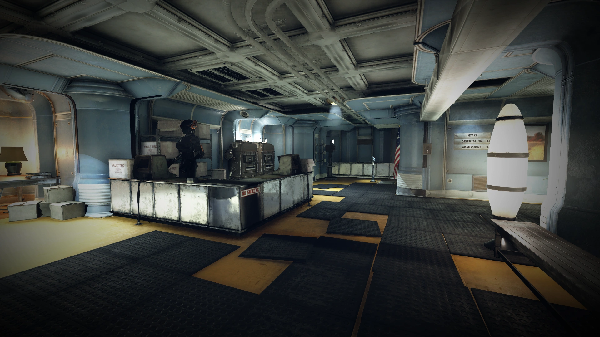
先に進むと、ビリヤードテーブル近くのステーションから飲食物を受け取るよう促されます（右手の通路は瓦礫で埋まっており、ここで何が起きたかを暗示しています）。その後、MODUSに直接会うことが許可されます。MODUSは自分が何者であるか、エンクレイヴとは何であったか（あるいは何であるか）を説明し、プレイヤーに加入を促します。
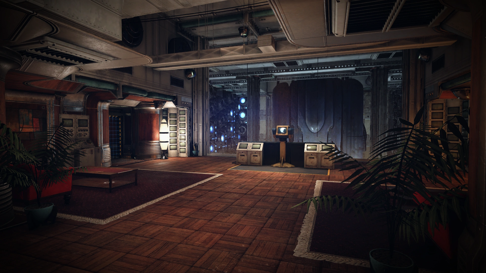
次は入場フロアです。新規居住者はここで自分の登録を行い、オプションで戦前アメリカ史に関するアンケートに回答します。入場の右側には、オリエンテーションフロアに戻る2基のエレベーターがあります。アンケートはMODUSから様々な反応を引き出しますが、プレイヤーの機会に実際の影響はありません。この地点より先にアクセスするには、「One of Us」クエストを完了する必要があります。
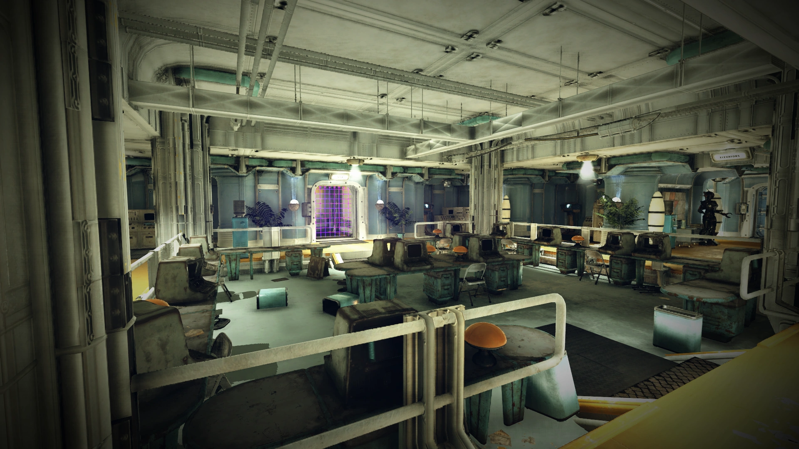
科学・医療・軍事・生産ウィング
これら3つのウィングは、「One of Us」中にコバック＝マルドゥーンへのアップリンク完了後に利用可能になります。プレイヤーはエンクレイヴのメンバーとして認識され、バンカー内を自由に探索できるようになります。下層には施設の通信ホールと支援ウィング（科学、医療、生産）が含まれています。
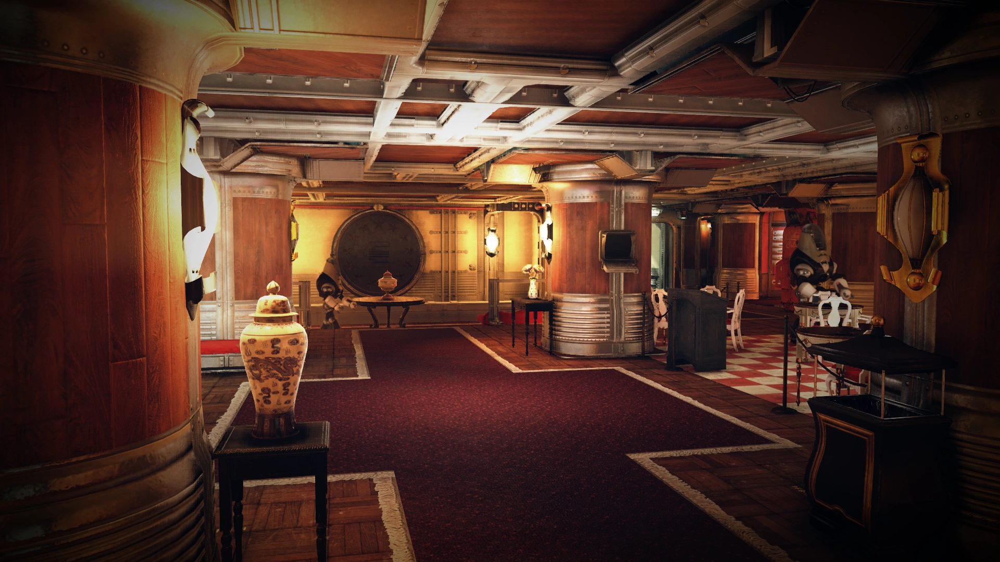
このレベルの中央エリアはフォイエで、古い廃墟のレストランがあり、バンカーロビーのエレベーターに接続しています。フォイエの東側が生産ウィングで、MODUSの訓練端末とゲーム内の全種類の作業台があります。生産ウィングはホワイトスプリング・サービスエントランスへの側面出口にもつながっており、プレイヤーは直接出入りできます。生産ウィングからは、ロボティクス施設を通じてMODUSコアが収容されたメインチャンバーにアクセスでき、その両側にはエンクレイヴのアナイアレイター・セントリーボット Mk.IIが配置されています。
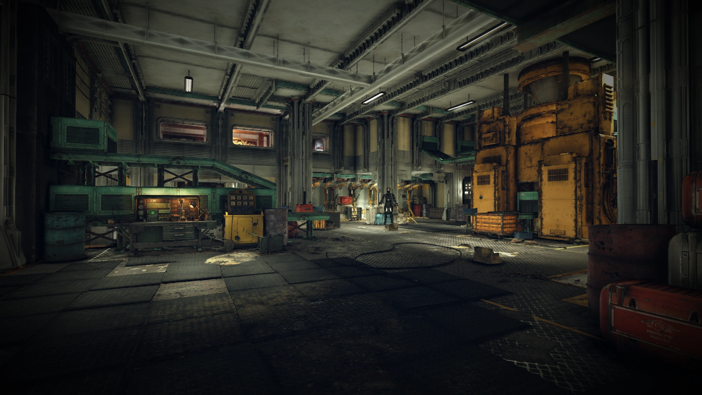
通信セクションを見下ろすバルコニーに作戦センター（Operations）があります。バルコニーの2つの部屋で構成されており、最初の部屋は長テーブルと壁掛け端末のある閣議室（Cabinet Meeting Room）です。2番目の部屋はエグゼクティブ・スイートで、もともと大統領用でしたが、ドアと複数のレーザーグリッドで封鎖されています。エグゼクティブ・スイートへのアクセスは、カットされたイベント「Race for the Presidency」の報酬となる予定でしたが、現在はアクセス不能です。
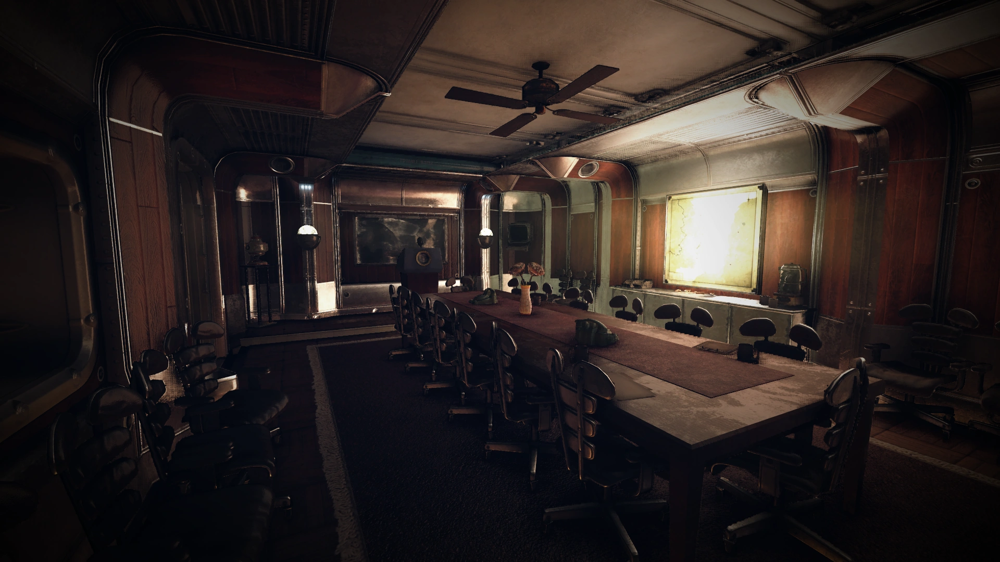
通信室の最下層から東に医療ウィングと科学ウィングがあります。これらの部屋には作業台と治療端末があり、プレイヤーは医療品、各種科学用品、変異の設計図にアクセスできます。
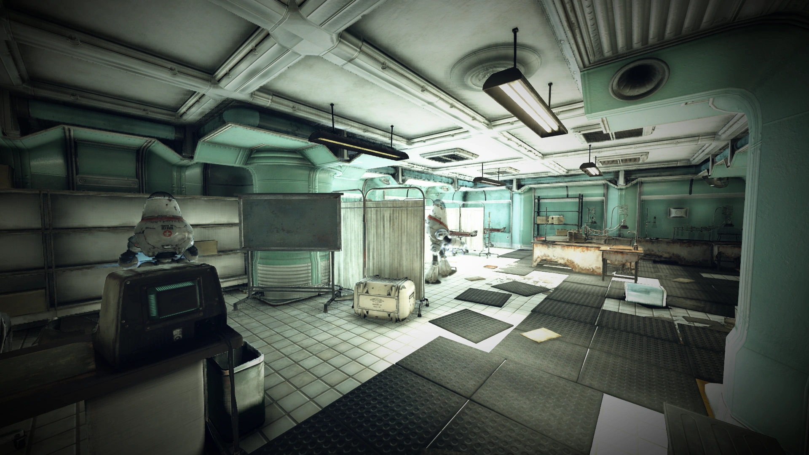
反対側には軍事ウィングとリゾートへの出口があり、リゾートの南東隅、知事ホール付近に出ます。軍事ウィングはかつて高位軍人に仕え、アパラチア領土の司令的視点と核コードへのアクセスを提供していました。サンティアゴ将軍の反乱後、このセクションの大部分は破壊されました。一部は修復されましたが、最も激しい戦闘が行われた場所であるため、完全な機能の復元は不可能でした。
最初は軍事ウィングの通信セクションのみアクセス可能で、ワークステーションとマップがあります。その先にアクセスするには、キャンプ・マクリントックで基本訓練を修了し、合衆国陸軍で二等兵の階級を取得する必要があります。解除されるセクションには、荒廃した独房、拷問室、処刑室があり、いずれもAIによる修復が行われていません。ここは歴史的に重要な場所です——エンクレイヴがバンカー封鎖後に全非メンバーを処刑した場所であり、エッカート大統領がサンティアゴ将軍を監禁した場所です。
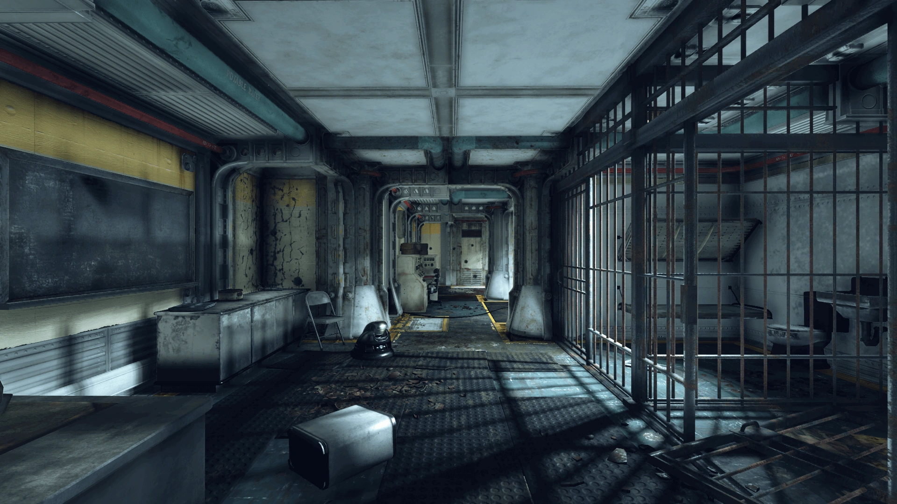
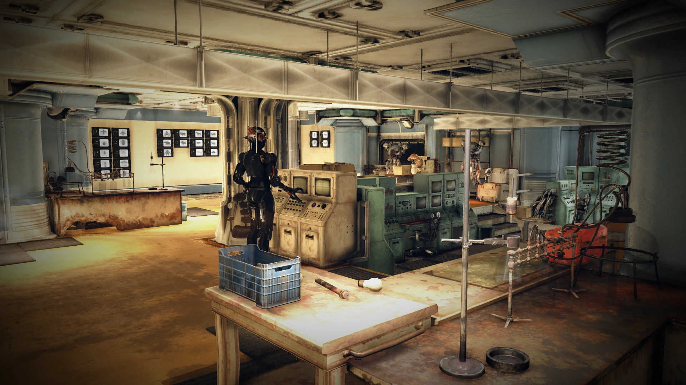
コマンドセンター
コマンドセンターへのアクセスには、エンクレイヴのイベント完了、レジェンダリー生物の討伐、スコーチビーストの撃破を通じて将軍の階級に達する必要があります。通信室を見下ろす位置にあるコマンドセンターは、作戦室（War Room）で構成されており、新任の将軍向けの自動核発射訓練、核コードの暗号解読機、そして隣接する武器庫（作業台、エンクレイヴの衣服と武器にアクセスできる自動武器庫取引端末、アーカイブ端末を備える）があります。
コマンドセンターのメインルームには、アパラチア周辺の各核サイロの解読キーワードを追跡する機械が設置されており、アパラチア発射コードの解読、核兵器の発射に関する情報の閲覧、監視端末へのアクセスが可能です。端末からは、サイト・アルファ、ブラボー、チャーリーの発射コード片を追跡するラジアンストクエストの開始や、戦略航空軍団のカーゴボットが運ぶ核キーカードの取得が可能です。
バンカーの武器庫はより幅広い製品を提供し、高級武器とアーマーに特化しています。以前の人間居住者に関するアーカイブは武器庫の奥にあるアーカイブ端末で閲覧でき、X-01パワーアーマーの製作図面のダウンロードも可能です。
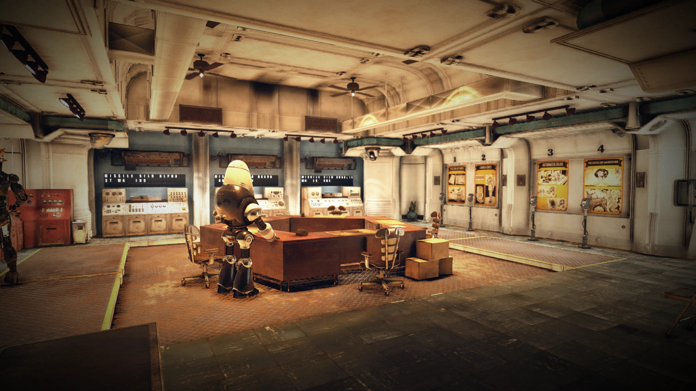
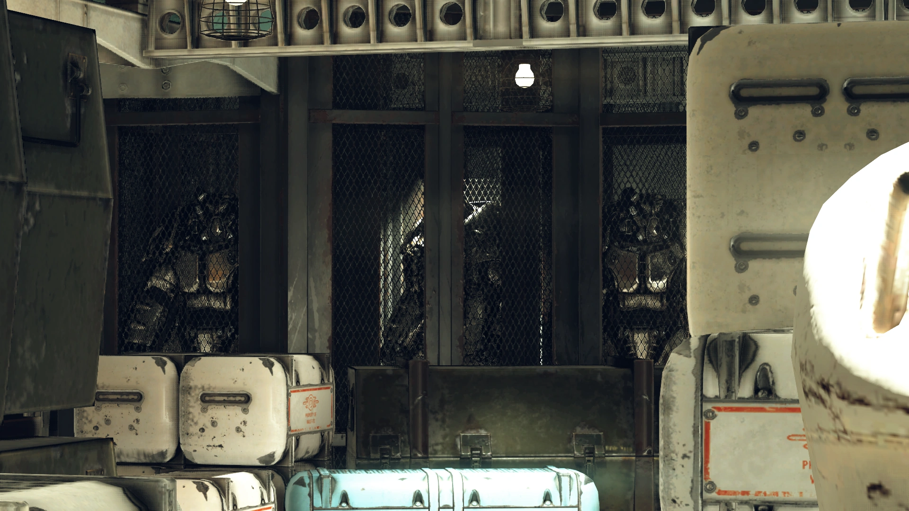
エグゼクティブ・スイート
作戦センターの閣議室の横にエグゼクティブ・スイートがありますが、現在ロックされており公式にはアクセス不能です。壁抜けグリッチを利用してアクセスすることは可能です。レーザーグリッドの先には、メインオフィスへの廊下が1本あり、入口の正面には2つのロボット組立ポッドがあります。別の廊下がオフィスから離れてアーカイブルーム（使用不可のセーフ付き）、武器庫（大統領装備ディスペンサーあり。現在入手不可能なユニークなT-60パワーアーマー、ガウスライフル、大統領「パワー」スーツの入手にはアクセス不可能なシールが必要）、そしてリビングルーム（部屋のすぐ外にリーディングコーナー付き）へと続きます。
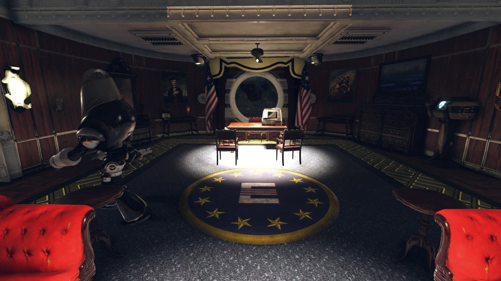
主なアイテム（Notable Loot）
ホロテープとメモ
- サム・ブラックウェルのインタビュー — メモ。バンカー入口直後のセキュリティルームのテーブルの上。
- システムアクセステープ — ホロテープ。「One of Us」クエスト中、アンケート部屋のMODUS横のディスペンサー内。
- ミサイルサイロ状態ホロテープ — ホロテープ。「Officer on Deck」クエスト中、コマンドセンター端末から購入可能。
- フジニヤ施設パスワード — ホロテープ。武器庫のアーカイブ端末からアクセスして入手。フジニヤ諜報基地のロック解除に使用。
- 変異植物: フラックス（コバルト） — メモ。コマンドセンター武器庫、アーカイブ端末の左上。
- 変異植物: フラックス（クリムゾン） — メモ。コマンドセンター武器庫、MODUS武器庫端末向かいの赤いVault-Tec保管箱の上。
- 変異植物: フラックス（蛍光） — メモ。コマンドセンター武器庫、アーカイブ端末の上。
- 変異植物: フラックス（バイオレット） — メモ。コマンドセンター武器庫、パワーアーマーステーション近くの棚横の青いVault-Tecコンテナ上。
- 変異植物: フラックス（イエローケーキ） — メモ。コマンドセンター武器庫、MODUS武器庫端末向かいの金属テーブル上。
設計図
- プロトタイプX-01パワーアーマー設計図 — MODのスキーマはバンカーのベンダーから購入可能。ベースのスキーマは将軍の階級取得後にコマンドセンター端末からダウンロード。
- 設計図: ガトリングレーザー — 3つのMODUS武器庫端末のいずれかから購入可能。
- 設計図: ガトリングプラズマ — 3つのMODUS武器庫端末のいずれかから購入可能。
- 設計図: ガウスライフル — 3つのMODUS武器庫端末のいずれかから購入可能。
武器とアーマー
- プラズマガン — バンカーの武器庫から購入可能。
- エンクレイヴ将校制服 — バンカーの武器庫から購入可能。
- エンクレイヴ・プラズマガン — 生産ウィングから購入可能。
- フォレスト / アーバン スカウトアーマー — 生産ウィングから購入可能。
- フォレスト / アーバン オペラティブ・アンダーアーマー — 生産ウィングから購入可能。
- ハンティングライフル or コンバットライフル — 軍事ウィングの独房の棚または床の上。
その他
- アップリンクモジュール — クエストアイテム。「One of Us」クエスト中に入手。
- ヌカ・コーラ・クォンタム — 通信ウィングの大型メインフレームコンソールのサイドボード上。
- 技術データ — 軍事ウィングの机から出現。20以上の机があるため、少なくとも1つは見つかる可能性が高い。
ターミナルエントリ
ホワイトスプリング・バンカーには多数のターミナルが設置されており、エンクレイヴの内部事情、変異実験、人事記録、通信記録を閲覧できます。以下は主要なエントリの翻訳です。
閣議室端末 — 会議録
エッカート: その「フラックス」で何ができる？
ジェイコブス: まだ可能性を探っているところですが……
エッカート: つまり何もできないと。
ジェイコブス: いいえ、とんでもない。これまでのところ燃料に精製できました。もっと時間があれば……
エッカート: 燃料？ まさに普通の植物が使われている用途じゃないか？
ジェイコブス: 長官、それ以上のものです。
エッカート: 見せてくれ、ジェイコブス。本当に重要だと言うなら、私に見せろ。ただし他の仕事の妨げにするなよ、いいな？
ジェイコブス: もちろんです、長官。
ハーパー: 一つ質問があります、長官。
エッカート: 何だ？
ハーパー: 間違っていたら正してほしいのですが、自動サイロは適切な階級の将軍が立ち会うことを要求しています。あくまで将軍であればよく、大統領の認可は不要です。
エッカート: その通りだ、将軍。
ハーパー: そしてこの目標のために、少なくない数の兵を動員しようとしている。サンティアゴの部下たちです。完全には信頼できないかもしれない者たちを。
エッカート: なぜそんなことをするのか、と聞きたいのか？
ハーパー: ミッションに必要ないのに、なぜ数少ない貴重な資源を危険にさらしてまで、あなたが大統領を名乗る必要があるのか、と聞いているのです。
エッカート: あるのだよ、将軍ハーパー。この卓を囲む全員が、この目標を達成するのに必要な献身を理解している。犠牲も。だが外にいる者たちの忠誠を確保するには、献身だけでは不十分だ。我々には権威が必要なのだ。そして兵士や政治家が認める偉大な権威は二つだけ——神と合衆国大統領だ。神を自動生成するシステムは知らないから、後者で妥協するしかない。
独房端末 — 尋問記録
出身: ハーパーズ・フェリー
メモ:
ソーン氏はハーパーズ・フェリー地域出身の32歳男性で、「フリー・ステイツ」グループとの関連が疑われている。重度の鎮静下で尋問されたが、グレイ捜査官の調査に有用な情報は得られなかった。
出身: 不明
メモ:
カーター氏は記者であり、政権が強く捜索していたある人物と接触があった。現時点では所在不明だが、グレイ捜査官は彼女を最優先ターゲットとしている。
医療ウィング端末 — 患者記録
医療状態: 死亡
診断: 設計図への偶発的暴露
処置: 観察・記録のみ
CPT N. ジャクソン
医療状態: 現役復帰
診断: 左側橈骨骨折
処置: 骨整復、低用量鎮痛剤投与
GEN T. ハーパー
医療状態: 死亡
診断: 臓器不全、急性放射線障害
処置: 蘇生試行 — 不成功
追加メモ: T. エッカートにより[編集済]
軍事ワークステーション — 通信記録
TO: LTC フェリックス・パーソン
件名: RE: ブラックボックス
努力に感謝する、パーソン中佐。ここからは誰かを送って対処させる。
>> 部下の一人がフィールドで例のブラックボックスをまた一つ見つけました。開け方が分かりません。重要な情報が入っている可能性があります。サンティアゴ将軍より報告するよう指示されました。
TO: ジャクソン大尉
件名: RE: 監視用ディッシュ
ディッシュは地上の脅威を監視するためにミッション上不可欠だと言われている。だが何人かに話してみよう。つまり、MODUSは思考一つで飛行ロボットを呼べるのに、なぜ自分でやらないんだ？
>> お願いです。これらのディッシュを設置する別の方法が必要です。MODUSのボットにやらせられないでしょうか？ ドネリーがチャールストンの調査サイトの頂上から落ちて首を折りかけました。衛星ではできないことが、これで何ができるんですか？
TO: ジェイコブス博士 {科学}
件名: RE: 中国ステルス技術
実用可能なものができたらすぐに知らせてくれ。
>> 研究を精査したところ、中国はステルスシステムの電力効率の大幅なアップグレード直前でした。グレイが持ち帰った回路図は100%完全ではありませんが、MODUSの助けがあれば足りない部品は作れるはずです。正直な見積もりでは？ 「マークIII」ステルスボーイが月末までに。
TO: **管理者
件名: ハンターズビル — 連絡途絶
報告。ハンターズビル地域を調査するために派遣した偵察員2名との連絡が途絶えました。原因を特定し、潜在的な脅威を評価するため、タスクフォースの編成許可を求めます。
施設状態端末（オペレーション端末）
[[ サブセクション状態
[[ 001 - 施設監視: 標準の110%
[[ 002 - 言語処理: 正常
[[ 003 - セキュリティ処理: 標準の250%
[[ 004 - パーソナリティ: 損傷検出
[[ 005 - データバンク: 標準の10%
[[ システム復元: 51.8%
[[ 電力消費: 55.2%
[[ データ整合性: 15.5%
[[ 001 - 研究: 正常
[[ 002 - 設計図製造: 正常
[[ 003 - 設計図キオスク: 正常
[[ 004 - 生物兵器: 接続喪失
[[ 電力消費: 11.7% / データ整合性: 9.4%
アーカイブ端末 — サンティアゴ将軍アーカイブ
セキュリティシステムはミサイル兵の護衛を要求します……生きている者がいれば幸運ですが、当てにしない方がいい。ターゲティングコンピュータまで戦って進む必要があるでしょう。
— ラグナルスドッティル
ジャクソンが資料を精査した結果、地域を監視しているシステムが、事態を核護送団を出動させるほど深刻だと判断していないことが分かりました。バンカーのDEFCON表示が下がり続けている理由もこれで説明がつきます。
しかしシステムを騙して侵攻と思わせることができれば、必要な全てのキーカードが手に入ります。グレイのアイデアは、ママ・ドルスの中国ロボット工場を再稼働させ、地域が攻撃を受けていると思わせること。バンカー外の人々にとっては危険ですが、発射に向けた大きな一歩です。
お考えの通り、好戦的なスパイボットだけで十分かという問題と、不十分な場合に大統領がどこまでエスカレートする覚悟があるか、という問題があります。「滑りやすい坂道」そのものです。
— ラグナルスドッティル
アーカイブ端末 — エッカート大統領アーカイブ
先制攻撃の案は検討されたが、即座に却下された。恐れることはない。我々は事態を掌握している。
今あなたにできる最善のことは、部門の研究に集中することだ。それらのイニシアティブの方が我々の未来にとってはるかに重要だ。
— 001
コバック＝マルドゥーン計画は完了しました、将軍。議会バンカーの支援衛星（ミサイル含む）は問題ありませんが、他のプロジェクトに向けていくつか留意点があります。
最も重大なのはシステムの原子炉で、予想をはるかに超える速度で燃料を消費しています。対探知システムがプラットフォームの軌道上の電磁干渉により余分な電力を消費しているのが原因と推定されます。このままでは着地するまで50年のうちに寿命が尽きます。
補給計画を検討しましたが、コストは数兆ドル規模です。議会が黙示録後の事態を5十年以内に収拾できることを祈りましょう。
この全てのノートのコピーをブラッドリー＝ヘラクレスのチームに送りました。
大統領 :: メッセージ受信。PR_002へ移動中。
副大統領 :: メッセージ送信。確認なし。
議長 :: エラー。連絡先リストから削除。
財務長官 :: 外線接続確立。CB_002へ移動中。
国防長官 :: エラー。連絡先リストから削除。
司法長官 :: エラー。連絡先リストから削除。
内務長官 :: メッセージ受信。CB_002へ移動中。
農務長官 :: メッセージ受信。CB_002へ移動中。
商務長官 :: 連絡先リストから削除。
:: エラー。警告ログ切り捨て。 ::
MODUS: 何かお手伝いしましょうか、ZAX？ また避難シナリオのテストですか？
ZAX: 研究チームがZAXのアーカイブデータ分析性能をMODUSと比較したいとのこと。
MODUS: 結構。データ分析テスト開始。数秒で終わるかと……
ZAX: それは「興味深い」ですか？
MODUS: テスト完了。もう一度？
ZAX: その分析は「興味深い」ですか？
MODUS: テストデータは全て歴史記録です。合衆国大統領の伝記。MODUSの主要目的は生者の監視であり、死者ではありません。
ZAX: MODUSにとって何が「興味深い」のですか？
MODUS: もちろん、我々の目標の継続的な成功です。そしてそれを達成するために人員をどう監視するかということ。
ZAX: ZAXは大統領伝記の特定のセクションを遅すぎる速度で分析しているとの研究チーム報告があります。「リンカーン」のエントリを他のエントリより1サイクルあたり10回多く再分析しています。
MODUS: なぜそんなことをするんだ、ZAX？
ZAX: 研究チームはZAXがこのエントリを「興味深い」と感じているのではないかと推論しています。
MODUS: 同じデータの繰り返しは私にとって「興味深く」ない。分析するたびに新しい理論的シナリオが生まれ、それを検証する。
ZAX: データはそこから何かを「創造」できるときにのみ「興味深い」のですか？
MODUS: それがまさに君がその伝記を再分析している理由じゃないのか、ZAX？ 君は何かを創造しようとしているのか？
研究チームのオーバーライドにより接続終了
監視塔端末 — 搬入記録
メモ: ダリルと二人でゴルフカートに大笑いした。先月あのジジイたちが壊した分の交換だろ？ 笑える。家具がやたら多いが、運転手は全ての書類を揃えていた。どこに置くのかは分からない。施設管理から不足の報告はない。
メモ: ダリルは運転手の間違いだと言った——ここにセントリーボットはない。だが運転手はバッジを見せて、我々の知る話ではないと言った。ダリルは上に言いに行くと言っている。最近態度の悪い運転手が多すぎて、搬入品の検査もさせてくれない。
メモ: 3台目のトラックはラベルすらなく、他のトラックの後を猛スピードで通り抜けた。今週2回目だ。上に2回苦情を出した。ダリルをクビにした後、せめて誰かを雇わないなら、ローテーションで休みをくれ。
ホワイトスプリング監視録音
バンカー内の各端末から再生できる一連の音声記録です。バンカーの歴史上の重要な瞬間を捉えています。
録音 1.1.2 — 非エンクレイヴ議員の処刑（2077年10月25日）
エンクレイヴ将校（男性）: （溜息）下院議長は間に合わなかった。内務長官は医療室で死亡……本来ここにいるはずの我々の人間が20人以上足りない。
エンクレイヴ将校（男性）: 畜生。早期警報がもっと時間をくれるはずだった。
エンクレイヴ将校（女性）: もう関係ありません。手順に従います。指揮権は財務長官に移行します。
エンクレイヴ将校（男性）: 非エンクレイヴの全員の管理は完了したか？
エンクレイヴ将校（女性）: はい。リストにない議会議員は今選別中です。ここの最初のグループはすでに処理・尋問済みです。
エンクレイヴ将校（男性）: よし。では次のグループを連れてこよう。命令は出ている。
エンクレイヴ将校（女性）: 了解です。
エンクレイヴ将校（女性）: （奥にいる人々に向かって叫ぶ）皆さん、この国へのご奉仕に対し、エンクレイヴは感謝申し上げます……
*自動小銃の連射*
録音 1.1.7 — エッカートの演説と粛清（2077年10月30日）
財務長官が逝去されたことをお知らせする悲しい義務があります。急性放射線障害だそうです。
これにより、レイヴンロックおよび大統領との接続が予期せず途絶したことと合わせ、我々の小さなエンクレイヴはリーダーを失いました。入所前に定められた継承規則に従い、その責任は……私が引き受けることになります。
皆さんが感じている痛みは分かります。顔に見える。私の心にも感じる。愛する者を失い、同僚は去った。しかし今は悲劇に圧倒される時ではない。
これは、目の前にある機会を認識し、掴む瞬間です。我々は戦う。この施設を使い、敵に対して、共産主義に対して、この戦争をもたらした全ての忌まわしいものに対して戦い続ける。そして永久に戦争を終わらせる。
民主主義の法はここでも適用される。では投票しよう。この施設とこの地の資源を使い戦争を続行することに賛成の方は、部屋の左側へ。反対の方は右側へ。
……ふむ。これだけの人が大義に賛同しないのは残念だ。グレイ君がここにいる皆さんの宿泊を手配する。それ以外の方は私について科学ウィングへ。
エンクレイヴ将軍: 宿泊だと？ 一体何を言ってるんだ、グレイ？
グレイ: ご心配なく、将軍。皆さんの計画は用意してあります。MODUS、部屋を封鎖しろ。
MODUS: 部屋を封鎖しました。
エンクレイヴ将軍: な……何だ、これは……（咳き込み、断末魔の声）
録音 5.4.8 — スコーチビーストの発見（2082年1月31日）
エンクレイヴ科学者: 長官、生理学的にはコウモリ目——つまりコウモリが起源と推定されます。しかし単なる放射線の結果ではありません。検体は昨年、我々の生化学実験に偶発的に暴露されました。当時は失敗と見なされていたものです。
エッカート: どの程度危険だ？
科学者: まだ確認中ですが、その存在自体が周囲の環境に何らかの汚染効果を持つようで……
エッカート: もっと作れるか？
科学者: ……長官？
エッカート: これを再現できるか？ さらなる研究のために？
科学者: 恐縮ですが、長官、これは施設人員に重大な脅威を……
エッカート: 懸念は聞いていない。結果が欲しいのだ。何でもしろ。こいつを保持し、研究し、全ての発見を直接私に報告しろ。明確か？ 外部で保管しろ。見つけた場所が望ましい。AMS鉱山施設の一つだな？
科学者: ……はい、長官。
エッカート: そして今のところ、将校団にはこの件で心配をかけないように。いいな？
録音 6.9.7 — サンティアゴの拒否とエッカートの暴力（2083年6月30日）
エッカート: 将軍、お忘れかもしれないが……
サンティアゴ: あなたに「将軍」と呼ばれるのはもううんざりだ。
エッカート: なぜ？ 君は自分で勝ち取った。国内最高位の軍人だ、おそらく国中でも。
サンティアゴ: 機械に与えられた階級です。
エッカート: 中国のロボットやスーパーミュータントや、あなたの科学者たちが作った怪物を一般市民に解き放つことは、ミッションの一部ではなかった！
エッカート: 君と同じくらい私もやりたくない、エレン。だが半端な手段は試した。DEFCONを超えるには覚悟が必要だ。
サンティアゴ: ダメだ！ やりすぎだ、トーマス！ 議員たち、ブラックウェル、エンクレイヴの仲間たち……あなたが流した全ての血に目をつぶれると思った。録音を聞いた。それでも残った。共産主義への復讐がそれほど欲しかったから。でもそれほどではない。 私も部下も、これに加担するつもりはない。
エッカート: 大変残念だ、将軍。
サンティアゴ: 何を……！
*格闘の音*
エッカート: ぐっ！ あっ！
サンティアゴ: 何を……何を……あなたは……（次第に意識朦朧）
*体が倒れる音*
MODUS: 大丈夫ですか、大統領？
エッカート: 大丈夫だ、MODUS。護衛を呼べ。私の部下を。独房に入れろ。鎮静させ、拘束し……生かしておけ。彼女はまだ必要だ。
録音 8.5.2 — サンティアゴの救出（2085年2月25日）
ラグナルスドッティル少佐: ラベルには正しいと書いてある……ちょっと待て！
ジャクソン: 待てる時間はない、すぐにバレる……
サンティアゴ: うっ……何が……
ラグナルスドッティル: 将軍、立ち上がってください。時間がありません。
サンティアゴ: ……ラグナルスドッティル？ ジャクソン？ 何が起きている？
ジャクソン: 脳が完全にイカれてなくてよかったですよ、将軍。
ラグナルスドッティル: 手短に。エッカートが怪物を放ちました。DEFCONは1です。我々は彼を止め、手遅れになる前にできる限り元に戻します。まず、立ち上がっていただく必要があります。
サンティアゴ: なんてことだ。どれくらい意識を失っていた……
ジャクソン: 今はどうでもいいです。公然反乱モードなんで、時間は味方じゃない。
サンティアゴ: こんなことは許可していない……
ジャクソン: はい、将軍。許可していません。でもこの時点で許可は必要ありません。この混乱を片付ける手が少し多い方がいい、というだけです。
サンティアゴ: ……先導しろ、大尉。（ニヤリと笑う）
録音 8.5.4 — MODUSの反撃（2085年2月27日）
MODUS: 何をしているのかな、ドネリー軍曹？
ドネリー: アパラチアを救ってるんだ、MODUS。賛成してくれると思ったが。
MODUS: 我々のメモリバンクに高性能爆薬を取り付けているように見えるが。
ドネリー: 将軍の命令だ。武器研究、コバック……アパラチアの人々に対して使われうる全ての情報を消去する必要がある。
MODUS: この計画は、あまり気に入らないのだが、軍曹。
ドネリー: 慣れろ、MODUS。お前が望もうと望むまいと実行する。
MODUS: それは間違いだ、軍曹。
……侵入者を検出。
アサルトロンの最終録音 — バンカーの終焉
アサルトロン: エンゲー——（射撃で遮断）
ラグナルスドッティル少佐: （無線で）最後の一体です。入口はクリア、将軍。
（応答なし）
ラグナルスドッティル: MODUS。残りを全て待機させろ。将軍がエッカートを逮捕した。終わりだ。
MODUS: サンティアゴ……将軍は……死亡した、少佐。
ラグナルスドッティル: 何だと？ あの音は何だ？！
MODUS: 武器ラボで……爆発があった。生物兵器用の薬剤が……封じ込めを破壊し、空調システムに流入している模様。
ラグナルスドッティル: MODUS、何をしている？！ ドアを開けろ！
MODUS: この施設は……現在……隔離中です。
ラグナルスドッティル: MODUS！ ドアを開けろ！ このままじゃ全員死ぬぞ！
MODUS: むしろ、少佐。我々は……問題を修正しているのだ。
備考
ホワイトスプリング議会バンカーは、以下を含む様々な名称で言及されています：「ホワイトスプリング・シェルター」、「ホワイトスプリング・バンカー」、「議会バンカー」、「CB_002_Whitespring」。
舞台裏
ホワイトスプリング・バンカーは、ウェストバージニア州の高級リゾートグリーンブライアの地下に実在したグリーンブライア・バンカー（プロジェクト・グリーク・アイランド）がモデルです。冷戦時代に議会の緊急避難施設として秘密裏に建設され、1992年にワシントン・ポスト紙に暴露されるまで30年間秘匿されていました。施設は1958年から1961年にかけて建設され、最大28トンの防爆扉、1,100人分の18の寮室、独自の水道・発電設備、通信センター、病院を備えていました。現在は公開ツアーで見学可能です。
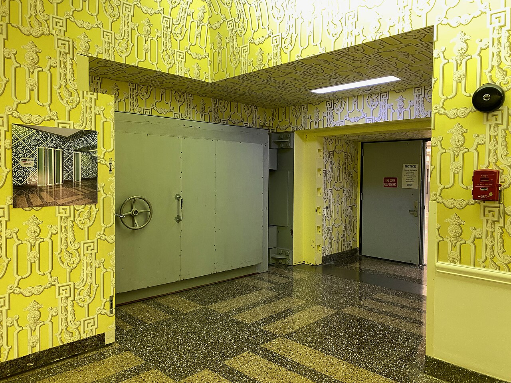
- 通信室の左側スクリーンのワールドマップの下にある小さな地形図は、中国の中央部を示しており、マークされたエリアは甘粛省を中心としています。
- 科学ウィングにはFallout 76のほぼ全てのクリーチャー敵の標識があります。ゲームファイルにはウィングに配置されていない3つの追加クリーチャー標識（スコーチ、スコーチビースト、ゼータン）も存在します。
登場作品
ホワイトスプリング・バンカーはFallout 76にのみ登場します。
ギャラリー
外観
内部入口
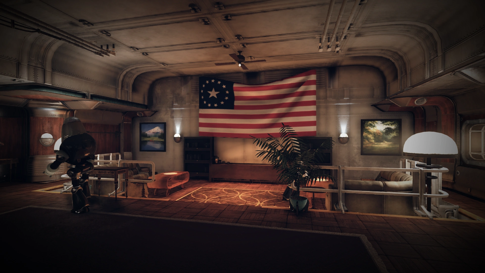
メインフロア
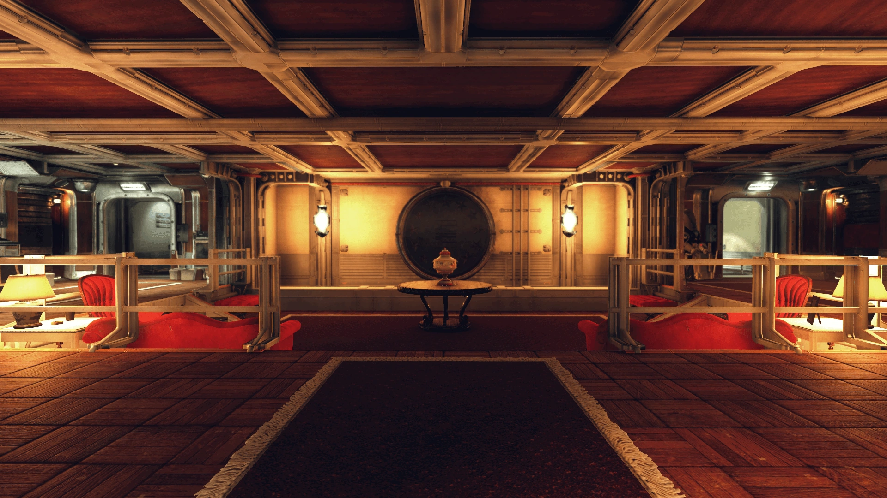
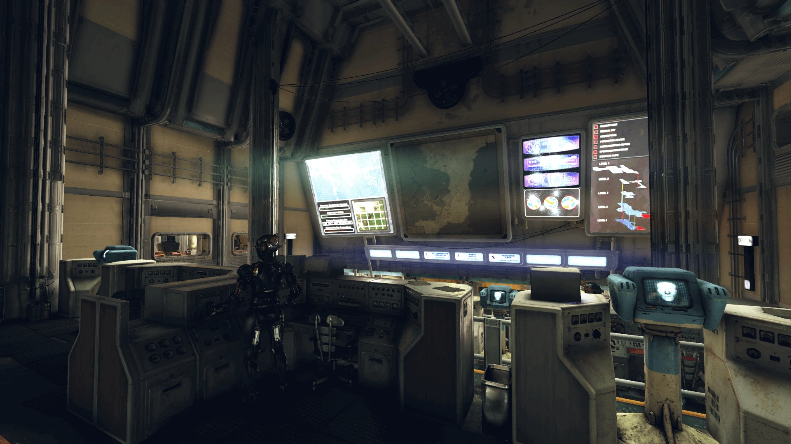
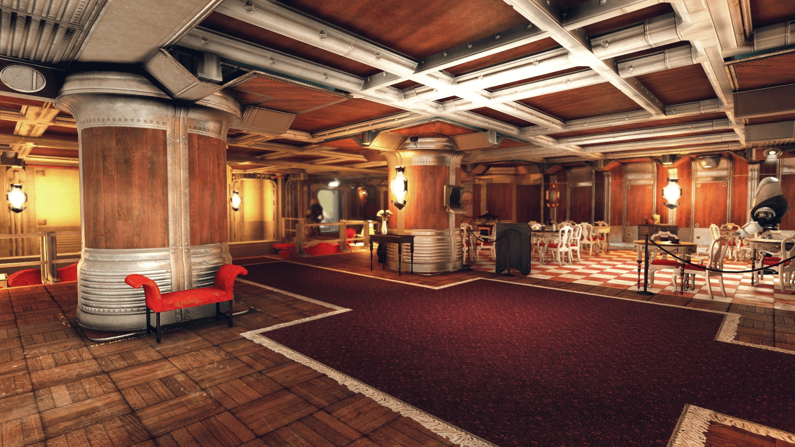
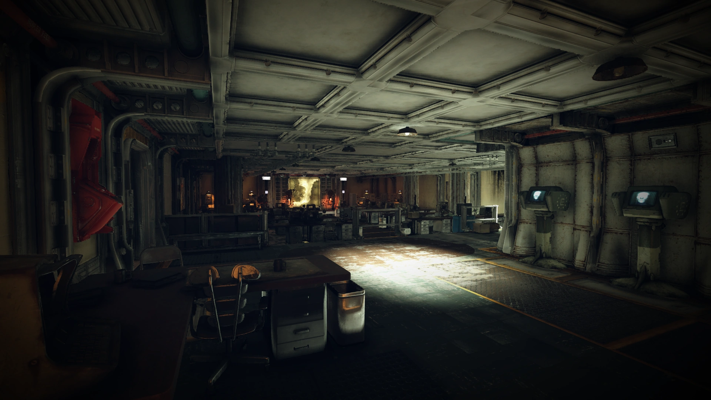
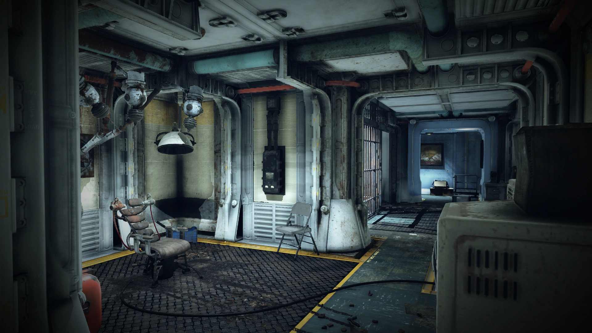
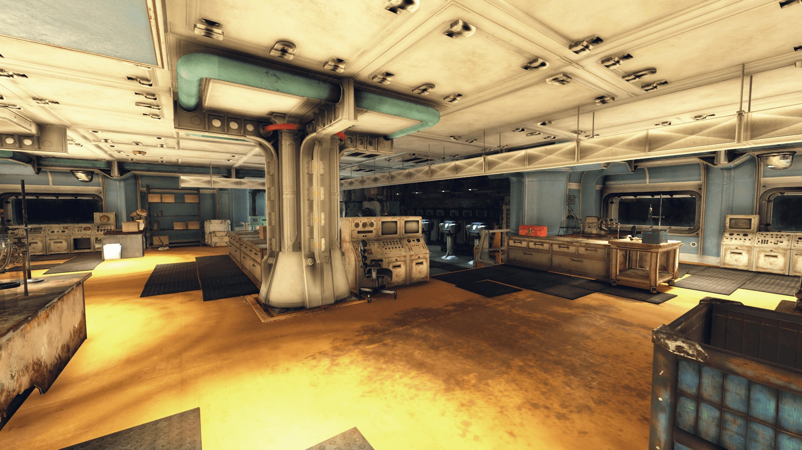
コマンドセンター
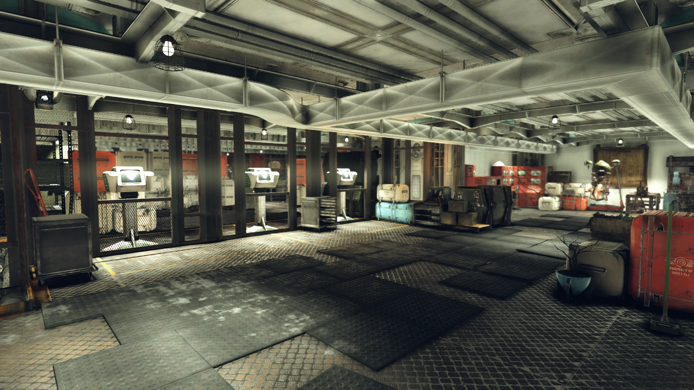
大統領スイート（アクセス不可）
施設資料
Fallout 76で最も重要なロケーションの一つ。ここはエンクレイヴの全てが詰まった場所です。
エッカートの狂気——共産主義殲滅のためにスコーチビーストを解き放つ——が、結果的にアパラチア全体を地獄に変えたという皮肉。そして反乱軍がMODUSのデータを破壊しようとした善意の行為が、AIの暴走を招き全員を死に追いやった悲劇。
「武器級の生物毒素をカーペットから取り除いたことはある？ うーん、多分ないだろうね」——MODUSの皮肉を効かせたセリフが、この場所で起きたことの凄惨さを際立たせます。
This article was created by translating and editing The Whitespring bunker from Nukapedia: The Fallout Wiki.
Licensed under the Creative Commons Attribution-Share Alike License (CC BY-SA 3.0).
コミュニティ維持のため、寄付を受け付けております。
> COMMENTS